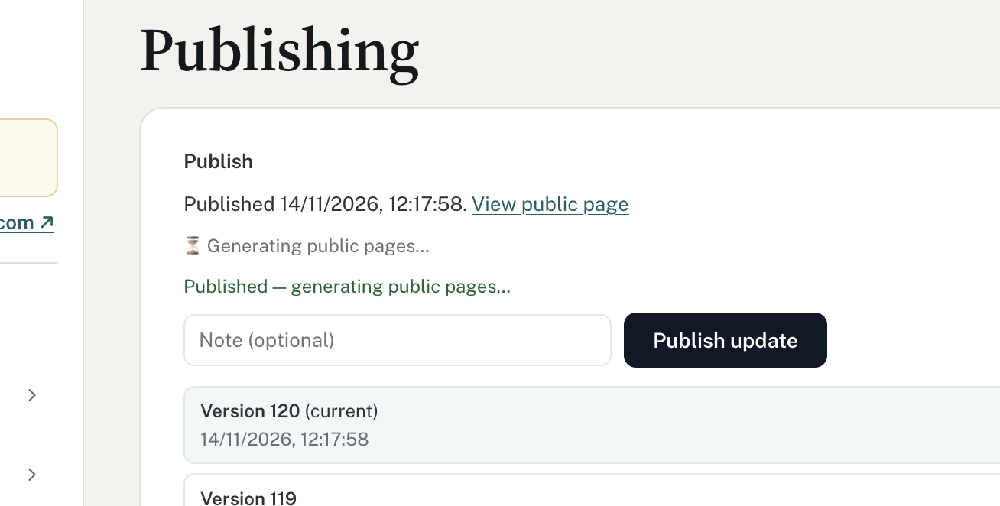

When the platform is working on something (publishing, generating pages, AI runs, syncs, imports), people should see it from across the room: what is happening, how far along it is, whether they can leave, and what happens next.
1 · Big, not subtleRunning work gets its own card at the top of the page, a moving bar and a plain-English title. Never a 12px grey line or an emoji.
2 · Say if they can leaveServer jobs: "You can leave this page; we'll keep going." Work running in the browser: "Keep this tab open" plus a leave-page warning.
3 · Visible everywhereThe top bar shows a task indicator on every page until the job ends. Finishing while away raises a toast; failures stay until dismissed.
Before · Publishing today

Three lines say nearly the same thing; one is green so it reads as finished.
12px, 70% opacity, hourglass emoji: easy to miss.
"Publish update" stays active, inviting a second publish.
No sense of how long, or whether leaving is safe.
After · same moment
Publishing version 120
Generating your public pages. You can leave this page; we'll keep going.
Started 12:17 · 0:42
Settings saved
Generating pages
Live on uk-associations.com
Publishing is paused until version 120 is live.
JobCard states
<JobCard job title detail steps progress canLeave onRetry onDismiss />
Drafting content with AIYou can leave this page; we'll keep going.58%
191 of 329 entries doneAbout [N] min left
Running · known total (determinate)
Syncing with Google SheetsReading [sheet name]. This usually takes under a minute.0:18
Running · unknown total (indeterminate) · elapsed timer always shown
Version 120 is livePublic pages generated at 12:19 · took 1:52
Shows on every page while any job runs for the current workspace. Each item links to the page that owns the job. Finished items stay for the session; failed ones turn red and stay.
Side panel · PublishStatus
Publishing…0:42
Unpublished changes · [N]
Live · published 12:19
The existing chip gains a spinner, elapsed time and a 4px moving bar while publishing, on shell tokens (no Tailwind blue). Keeps its link to Publishing.
Browser work · KeepOpenBanner
Finding map locations · 37 of 120Keep this tab open. This runs in your browser and stops if you leave.
Sticky at the top of .main for client-side loops (geocoding, file parsing, CSV import). Pairs with a beforeunload and in-app leave guard. Dark so it can't be mistaken for a passing notice.
Where it applies today
JobWhere in codeProgressPatternPublish / restore / regenerateDirectoryPublishPanel, DirectoryPublishStatusSteps, unknown totalJobCard with 3 steps + side-panel chip + TaskIndicator; publish disabled with reasonAI content bulk runDirectoryAiContentPanelprocessed of totalJobCard determinate, spark icon; result opens AiBulkRunReportSEO metadata backfillDirectoryAiSeoMetadataPanel, DirectorySeoSettingsPanelprocessed of totalJobCard determinate, spark iconGoogle Sheets syncClientMapData, AdminMapData (syncNow)UnknownJobCard indeterminate + timer; success lists rows added / updatedCSV import, geocodingClientMapData (doImport, geocode loop), DirectoryEntriesPanelCount knownKeepOpenBanner + leave guard while in browser; JobCard summary when doneSingle AI draft, save, short actionsAIButton, every SaveUnder ~10sButton loading state only; no JobCard
TimingUnder 1s: nothing. 1–10s: button loading label. Over 10s or unknown: JobCard + TaskIndicator. Show the elapsed timer from the start; add "about N min left" only when there is a real basis.
State and pollingOne useJob(kind, id) hook wraps today's per-panel polling (3s) and status fields. A JobsProvider in AppShell feeds the TaskIndicator. Status survives reload because it comes from the server.
Accessibility and motionJobCard is role=status (alert when failed); announce start, every 25%, and finish, not each tick. Bars carry aria-valuenow or aria-valuetext. Reduced motion: no stripes, spin or slide; static bar plus text updates.